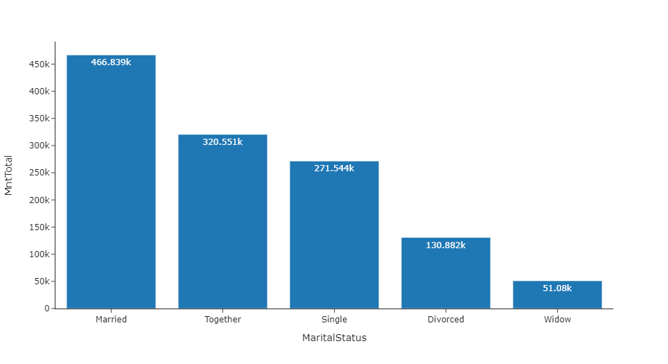
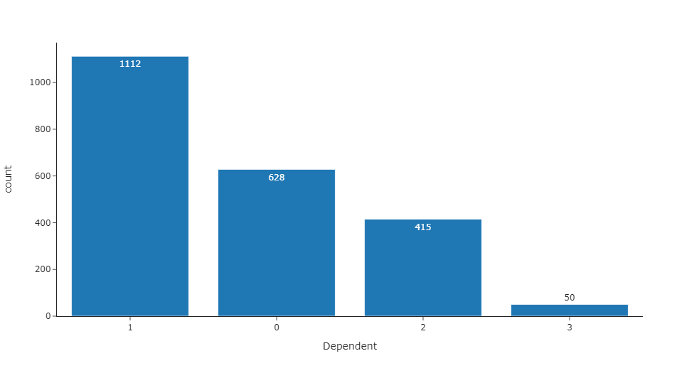
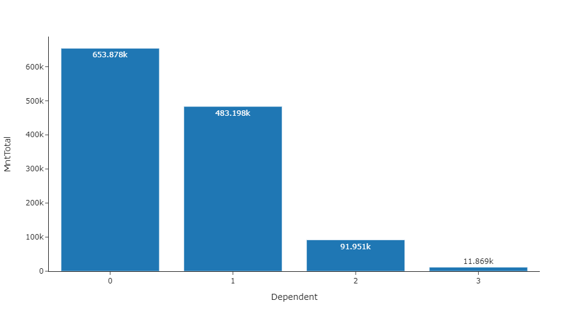
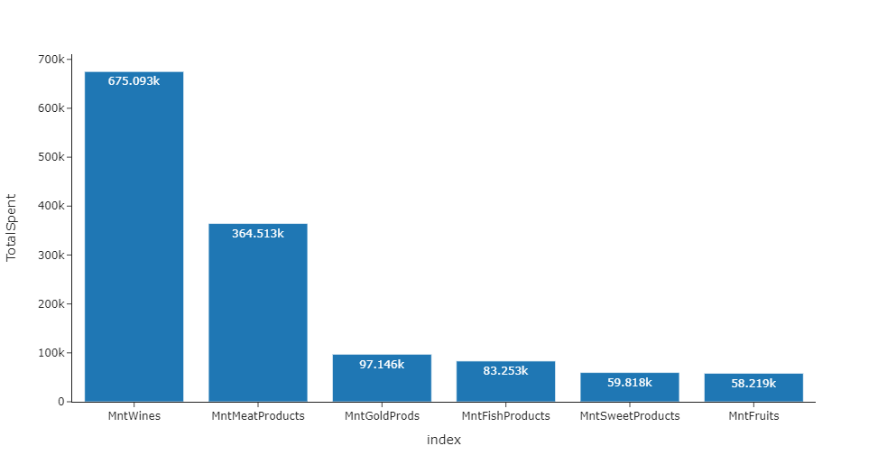
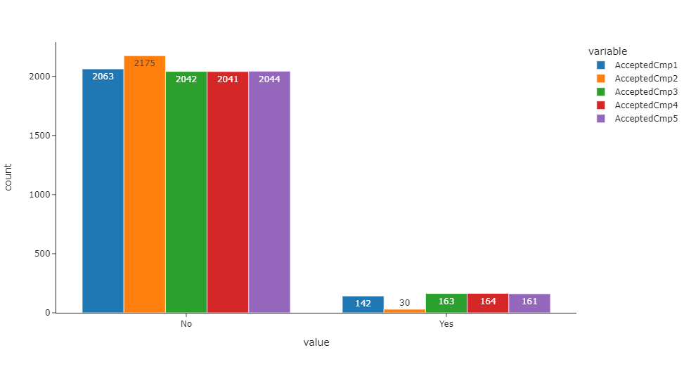

SUPERMARKET
ANALYSIS

Today we are going to explore a dataset that I got from Kaggle about sales and promotion in a supermarket. Data analysis is vital to drive up the sales of a supermarket by knowing who is our target market is, which channel is more effective to purchase item from the supermarket, or to know which target market reacts more to the promotional material.

It is found that majority of the customers consists of "Married" and "Together". Which means in a household, there will be more than 1 individual living in a house. Thus, they are the biggest spender group when going to a supermaket. These group tend to have dependent so let's have a look how many dependent does the customers have and how it affect the spending of the customer.


Most of the customer have none or only 1 dependent. In addition, customer with no dependent has the highest total spending. Thus, the effort of doing promotional materials for aiming for kids or teenagers can be diverted to material that attracts adult as most customers has no dependent. Thus, we should explore what type of products has the highest sales.

It is found that Wines and has the highest sales followed by Meat. Products such as Gold, Fish, Sweet and Fruits are less popular therefore to increase the sales of these products, more promotional materials should be done to ensure the customers are aware of the availability of the products offered in the supermarket.

Overall, it can be seen that the campaign done by the supermarket is not positively received by the customer as the number responded to the campaign is very low. Especially in Campaign 2, it is lower than other campaign, while the others have similar performance. Thus, Campaign 2 should be looked into and look for ways to improve the response among customers.
Conclusion
- Majority of the customers are from Married and Together group and these group has the highest total spending
- Customers that has no or 1 dependent has the highest amount of total spending, thus, any promotion to kids product can be reduced
- The type of product with the highest total spending is Wines and followed by Meat, therefore, promotion on Meat and Wine can be reduced and focus more on other types of products to boost their sales
- The past campaign done is not well received, hence improvement should be done on the campaign
You can find my Jupyter file here .